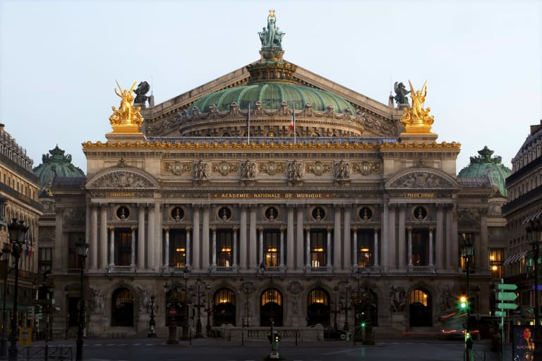
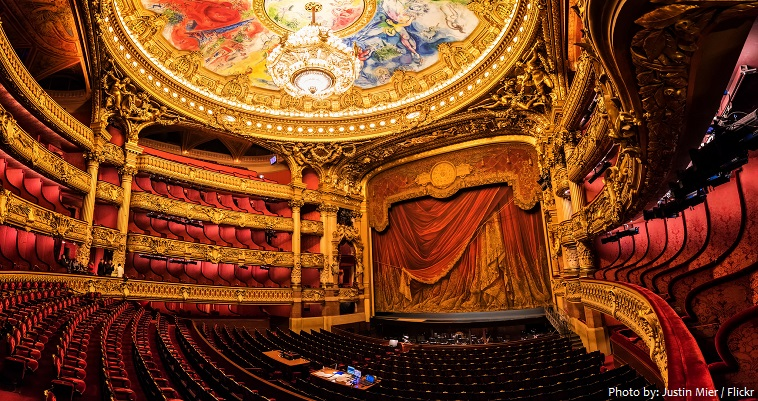
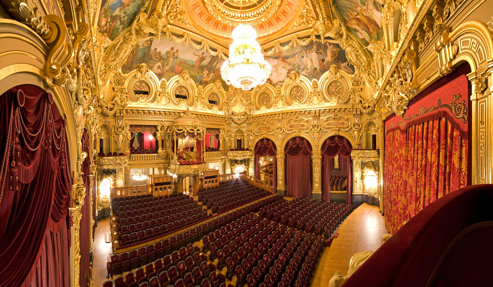
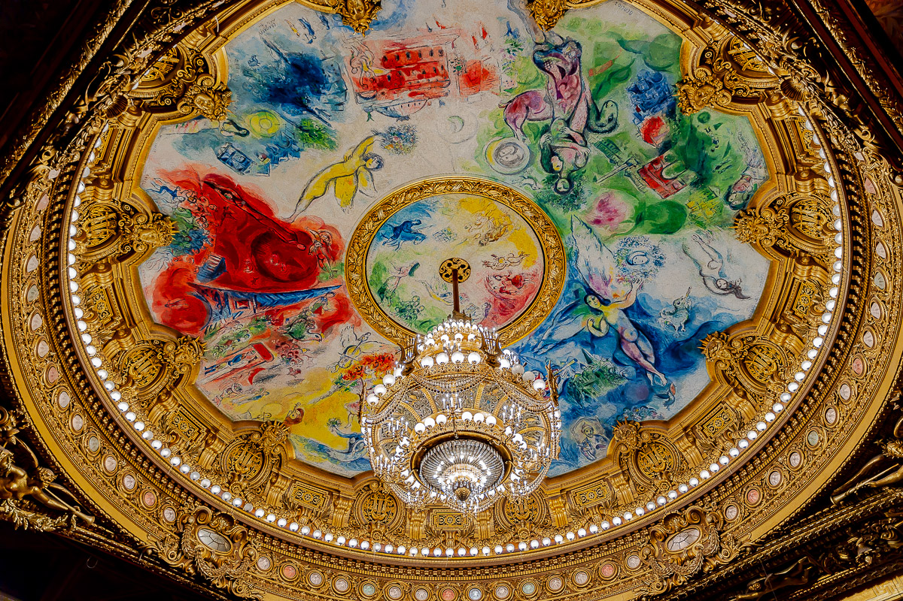
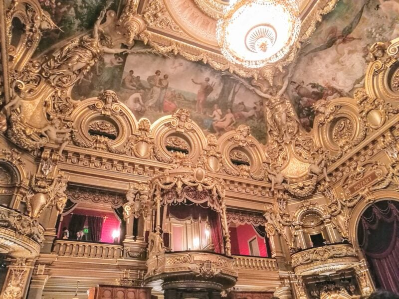

| Caractéristiques |
Opéra Garnier (Paris) |
Opéra Monte-Carlo (Monaco) |
| Photo du bâtiment |
 |
 |
| Date d'inauguration |
1875 (après 15 ans de travaux) |
1879 (8 mois de travaux) |
| Dimensions |
12000m² |
670m² |
| Places |
2000 places |
500 places |
| Places (photo) |
 |
 |
| Entrée |
Grand Escalier |
Par le casino |
| Style architectural |
Eclectisme total |
Beaux-Art balnéaire |
| Relation à l'extérieur |
Façade urbainne stricte dominant la pace |
Ouverture sur la mer |
| Plafond de la salle |
Peint par Marc Chaggal en 1964 |
Peint par Feynot en 1878 |
| Plafond de la salle (photo) |
 |
 |